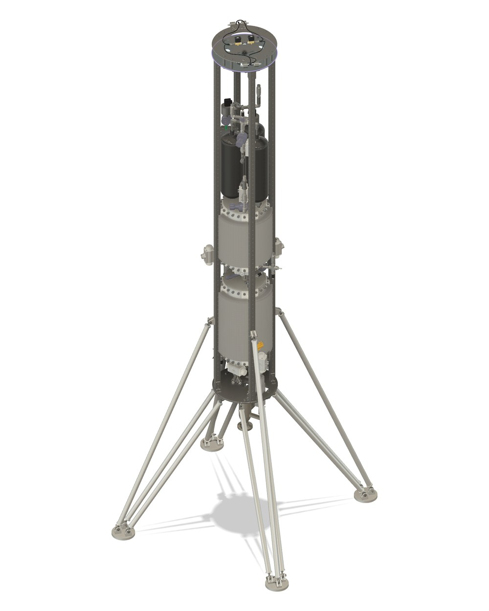
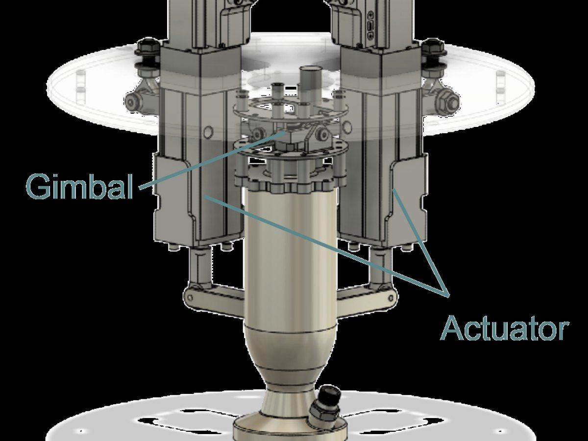
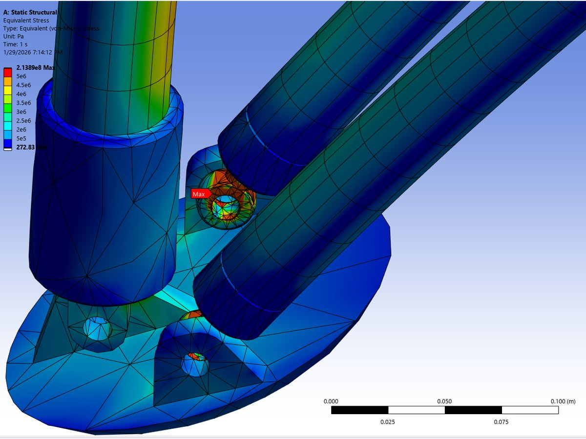

Student rocketry team · HALO, a VTVL hopper
Gaucho Rocket Project
Vice President, Sep 2024 – Jun 2026, UC Santa Barbara
HALO: a hopper that takes off, hovers, and lands on its own legs.
HALO is the team's vertical take-off, vertical landing vehicle: a ~3 kN nitrous oxide / isopropanol engine on a gimbal, four aluminum rails carrying the tanks and avionics, cold-gas roll thrusters and splayed landing legs, built for a stable hover and a ~100 m hop. As vice president I owned integration: structures, propulsion, actuators, sensors, custom PCBs, power electronics and controls had to fit, survive and work together.
- Ran FEA and structural optimization to trade mass against stiffness, strength and factor of safety.
- Designed for manufacturing across CNC machining, additive, sheet metal and composites.
- Organized and led design reviews with faculty and industry sponsors.



~3 kN
N2O / IPA engine
200 kg
vehicle on four rails
~100 m
hop target